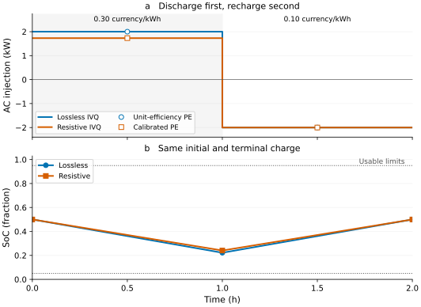
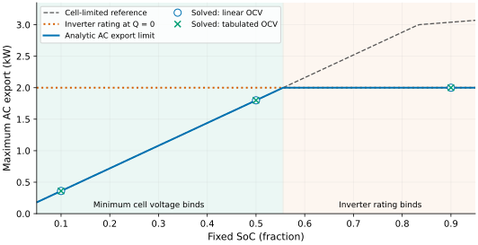

Battery storage models: PE versus IVQ
<!– study-executable –>
When does a constant-efficiency battery model give a useful schedule, and when can cell voltage change the answer? This study compares power-energy (PE) storage with current-voltage-charge (IVQ) storage. It first matches their lossless schedules, then introduces internal resistance, and finally examines state-dependent export limits.
All data are synthetic. The network is an ideal 230 V supply at the battery's point of connection, with a constant 2 kW load. There are no feeder or converter losses. This deliberately isolates the battery assumptions; it is not a feeder security assessment or a calibrated cell study.
Run this study
Follow the installation steps in Your first study. From the repository root, run the executable study tutorials and their assertions with:
julia --project=. scripts/run_study_tutorials.jlAlternatively, paste this page's Julia blocks into a fresh Julia session in order. CI runs the same published blocks on Julia 1.10 and the latest stable release. The numerical checks allow small solver differences, with budgets of 0.1 W, 0.1 Wh and 0.001 V where appropriate.
Choose the model for the question
| Model | Stored state | Loss assumptions | Suitable question |
|---|---|---|---|
PE StorageDevice | energy in Wh | specified one-way efficiencies | What schedule follows from declared AC ratings and usable energy? |
| IVQ Thévenin | fractional SoC | constant OCV and internal resistance | Do current limits or voltage sag restrict delivery? |
| IVQ linear | fractional SoC | linear OCV with fixed resistance | How sensitive are limits to SoC and voltage endpoints? |
| IVQ tabulated | fractional SoC | interpolated OCV and optionally resistance | What limits follow from a documented cell parameter set? |
PE aggregates cell and converter behaviour into AC ratings and efficiencies. IVQ directly constrains cell voltage and current, with the converter represented by AdvancedInverter. The IVQ cell model is an Rint equivalent circuit: it omits polarization, relaxation, hysteresis, temperature, aging and cell imbalance. Additional detail is useful only when its parameters are supported by evidence.
Establish a common experiment
Use two one-hour intervals, priced at 0.30 and 0.10 currency/kWh. The pack has 100 cells in series and two parallel strings. Each cell stores 10 Ah at a constant OCV of 3.6 V in the first comparison, giving a nominal pack energy of 7.2 kWh. Both models start at half capacity, finish at the same state, and use a 5–95% window with a 2 kW / 2 kVA AC rating and a 10 A AC current limit.
using PowerOptLab
using BMOPFTools: parse_bmopf
function supply(price)
parse_bmopf("""
{
"bus": {"poc": {"terminal_names": ["1", "n"],
"perfectly_grounded_terminals": ["n"]}},
"voltage_source": {
"grid": {"bus": "poc", "terminal_map": ["1"],
"v_magnitude": [230.0], "v_angle": [0.0],
"cost": [$price]}},
"load": {
"demand": {"bus": "poc", "terminal_map": ["1", "n"],
"configuration": "SINGLE_PHASE",
"p_nom": [2000.0], "q_nom": [0.0]}}
}
"""; from_string=true)
end
nets = [supply(0.30), supply(0.10)]
dt_h = 1.0
ns, np = 100, 2
q_cell = 10.0 # Ah per cell
v0 = 3.6 # V, constant OCV for the cycle comparisons
p_rating = 2000.0 # W
nominal_energy_wh = ns * np * v0 * q_cell
ac_power_base = p_rating # VA; keep the numerical base near the device rating
options = (tol=1e-8, acceptable_iter=0, max_iter=500, bound_relax_factor=0.0)
inverter = AdvancedInverter(id="bat", bus="poc",
s_max=p_rating, i_max=10.0, v_dc=ns*v0)
function constant_cell(resistance)
thevenin_chemistry(name="synthetic-constant-OCV",
v_nominal=v0, r_internal=resistance, q_cell=q_cell,
v_cell_min=3.0, v_cell_max=4.2,
i_charge_max=5.0, i_discharge_max=5.0,
soc_min=0.05, soc_max=0.95,
source="synthetic tutorial data; no cell calibration")
end
function pack(chemistry; soc=0.5)
IVQBattery(id="bat", bus="poc", chemistry=chemistry,
n_series=ns, n_parallel=np, soc_init=soc,
inverter=inverter, cyclic=true)
end
function energy_model(eta_charge, eta_discharge)
StorageDevice(id="bat", bus="poc",
p_charge_max=p_rating, p_discharge_max=p_rating,
energy_min=0.05*nominal_energy_wh,
energy_max=0.95*nominal_energy_wh,
energy_init=0.5*nominal_energy_wh, cyclic=true,
eff_charge=eta_charge, eff_discharge=eta_discharge,
s_max=p_rating, i_max=10.0,
q_min=-p_rating, q_max=p_rating)
endBoth models permit reactive power within the same apparent-power circle. The objective prices active energy only, so a particular reactive dispatch need not be unique and is not compared. The later fixed-SoC studies explicitly impose zero reactive power.
The AC power base is 2 kVA, matching the rating. This keeps the squared per-unit rating constraints near unity rather than mixing tiny power bounds with the voltage and state equations. acceptable_iter=0 requires the declared convergence tolerances rather than an acceptable-tolerance exit; returned status and physical residuals are checked below.
bound_relax_factor=0 prevents Ipopt from relaxing the squared per-unit rating bounds. A small per-unit slack can otherwise correspond to an appreciable violation in VA. Independently of this solver setting, check the returned physical limits. See the inverter reference.
Recover the lossless PE schedule from IVQ
PE uses positive charge and discharge powers, with net AC injection positive on discharge:
\[P^{inj}=p^d-p^c,\qquad E_{t+1}=E_t+\left(\eta^c p^c-\frac{p^d}{\eta^d}\right)\Delta t.\]
IVQ uses positive cell current on discharge:
\[v_{cell}=OCV(soc)-i_{cell}R(soc),\qquad P_{dc}=n_s n_p v_{cell}i_{cell},\qquad soc_{t+1}=soc_t-\frac{i_{cell,t}\Delta t}{q_{cell}}.\]
Equivalently, the last term is $i_{pack}\Delta t/(n_p q_{cell})$, since $i_{pack}=n_p i_{cell}$. Hours and Ah are used here. Dividing cell current by pack capacity would incorrectly slow the SoC change by the parallel count.
With zero resistance and unit efficiencies, stored energy is exactly $n_s n_p v_0 q_{cell}soc$. The expected schedule discharges 2 kW in the expensive interval and charges 2 kW in the cheap interval. The load costs 0.80 without storage and 0.40 with storage, in the declared currency.
pe_ideal = solve_multiperiod_opf(nets, [energy_model(1.0, 1.0)];
dt_h=dt_h, s_base=ac_power_base, solver_options=options)
ivq_ideal = solve_multiperiod_ivq(nets, [pack(constant_cell(0.0))];
dt_h=dt_h, s_base=ac_power_base, solver_options=options)
@assert solve_status(pe_ideal).publishable
@assert solve_status(ivq_ideal).publishable
pe0 = pe_ideal.dispatch["bat"]
ivq0 = ivq_ideal.dispatch["bat"]
@assert maximum(abs.(pe0.p_net - [2000.0, -2000.0])) < 0.1
@assert maximum(abs.(ivq0.p_poc - pe0.p_net)) < 0.1
@assert maximum(abs.(pe0.energy_wh - [3600.0, 1600.0, 3600.0])) < 0.1
@assert maximum(abs.(nominal_energy_wh .* ivq0.soc - pe0.energy_wh)) < 0.1
@assert abs(pe_ideal.objective - 0.40) < 1e-4
@assert abs(ivq_ideal.objective - 0.40) < 1e-4
println("Lossless PE/IVQ: ", round.(ivq0.p_poc; digits=2),
" W; cost = ", round(ivq_ideal.objective; digits=4))PE defaults to operation=:relaxed, an approximate normalized product constraint on charging and discharging. It does not enforce exact mathematical exclusion. The checks below therefore include the actual simultaneous-power residual. For other prices or operating modes, see charge/discharge exclusivity.
Introduce resistance and calibrate a PE comparison
Set cell resistance to 0.1 Ω. For this constant-OCV model, returning to the same SoC over two equal intervals requires equal-magnitude charge and discharge currents. Charging at the 2 kW rating gives the positive magnitude
\[I=\frac{-v_0+\sqrt{v_0^2+4R P_{rated}/(n_s n_p)}}{2R}.\]
The expected discharge is $n_s n_p(v_0-RI)I$, about 1731.41 W. Over this current range the price saving increases with current, so the charging rating binds. Neither the SoC nor the cell current and voltage bounds restrict this cycle. This gives an independent reference for the nonlinear solve.
resistance = 0.1
current_ref = (-v0 + sqrt(v0^2 + 4resistance*p_rating/(ns*np))) /
(2resistance)
discharge_ref = ns*np*(v0 - resistance*current_ref)*current_ref
soc_ref = [0.5, 0.5 - current_ref*dt_h/q_cell, 0.5]
cost_ref = (2000.0 - discharge_ref)*dt_h*0.30/1000 +
(2000.0 + p_rating)*dt_h*0.10/1000
ivq_resistive = solve_multiperiod_ivq(nets, [pack(constant_cell(resistance))];
dt_h=dt_h, s_base=ac_power_base, solver_options=options)
@assert solve_status(ivq_resistive).publishable
ivqr = ivq_resistive.dispatch["bat"]
@assert maximum(abs.(ivqr.p_poc - [discharge_ref, -p_rating])) < 0.1
@assert maximum(abs.(ivqr.soc - soc_ref)) < 1e-5
@assert abs(ivq_resistive.objective - cost_ref) < 1e-4
# Calibrate PE to this known synthetic cycle, at this one current.
eta_charge = v0/(v0 + resistance*current_ref)
eta_discharge = (v0 - resistance*current_ref)/v0
pe_calibrated = solve_multiperiod_opf(nets,
[energy_model(eta_charge, eta_discharge)];
dt_h=dt_h, s_base=ac_power_base, solver_options=options)
@assert solve_status(pe_calibrated).publishable
per = pe_calibrated.dispatch["bat"]
@assert maximum(abs.(per.p_net - ivqr.p_poc)) < 0.1
@assert maximum(abs.(per.energy_wh - nominal_energy_wh .* ivqr.soc)) < 0.1
@assert abs(pe_calibrated.objective - cost_ref) < 1e-4
println("Resistive PE/IVQ: ", round.(ivqr.p_poc; digits=2),
" W; cost = ", round(cost_ref; digits=4))| Quantity | Lossless PE and IVQ | Resistive IVQ and calibrated PE |
|---|---|---|
| First-interval discharge | 2000.00 W | 1731.41 W |
| Second-interval charge | 2000.00 W | 2000.00 W |
| Intermediate SoC | 0.22222 | 0.24087 |
| Two-hour supply cost | 0.4000 | 0.4806 |

The lines are IVQ schedules; the power markers are their PE comparisons. Both models return to the initial state. Resistance reduces first-interval delivery because part of the absorbed energy becomes heat.
The calibrated efficiencies are approximately 0.9329 and 0.9280, with a product of 0.8657. Here, constant OCV, constant resistance, equal current magnitudes and lossless conversion make that product equal to delivered/absorbed cycle energy. In general, $(OCV-iR)/(OCV+iR)$ is only a fixed-SoC, equal-current proxy, not a measured cycle efficiency. A PE fit to this cycle does not establish accuracy at other currents or SoC. Converter losses also require separate accounting.
Check the physical balances and limits
Compare states as well as costs. These checks verify charge conservation, pack scaling, the Rint voltage law, lossless AC/DC transfer, cyclic closure and ratings. For constant OCV, total absorbed minus delivered energy must equal cell ohmic loss over the two intervals.
for (dispatch, r_cell) in [(ivq0, 0.0), (ivqr, resistance)]
@assert maximum(abs.(diff(dispatch.soc) + dt_h .* dispatch.i_cell/q_cell)) < 1e-7
@assert maximum(abs.(dispatch.i_pack - np .* dispatch.i_cell)) < 1e-6
@assert maximum(abs.(dispatch.v_pack - ns .* dispatch.v_cell)) < 1e-6
@assert maximum(abs.(dispatch.v_cell - (v0 .- r_cell .* dispatch.i_cell))) < 0.001
@assert maximum(abs.(dispatch.p_dc - ns*np .* dispatch.v_cell .* dispatch.i_cell)) < 0.1
@assert maximum(abs.(dispatch.p_poc - dispatch.p_dc)) < 0.1
@assert maximum(hypot.(dispatch.p_poc, dispatch.q_poc)) <= p_rating + 0.1
@assert maximum(hypot.(dispatch.p_poc, dispatch.q_poc)/230.0) <= 10.0 + 1e-4
@assert maximum(abs.(dispatch.i_cell)) <= 5.0 + 1e-6
@assert all(3.0 - 0.001 .<= dispatch.v_cell .<= 4.2 + 0.001)
@assert all(0.05 - 1e-7 .<= dispatch.soc .<= 0.95 + 1e-7)
@assert abs(last(dispatch.soc) - first(dispatch.soc)) < 1e-7
cycle_loss_wh = -sum(dispatch.p_poc)*dt_h
ohmic_loss_wh = ns*np*r_cell*sum(abs2, dispatch.i_cell)*dt_h
@assert abs(cycle_loss_wh - ohmic_loss_wh) < 0.1
end
for dispatch in [pe0, per]
@assert maximum(abs.(dispatch.diagnostics.energy_balance_wh)) < 0.1
@assert abs(dispatch.diagnostics.terminal_energy_error_wh) < 0.1
@assert maximum(abs.(dispatch.diagnostics.ac_power_balance_w)) < 0.1
@assert maximum(dispatch.diagnostics.power_limit_violation_w) < 0.1
@assert maximum(abs.(dispatch.diagnostics.simultaneous_power_w)) < 0.1
@assert maximum(hypot.(dispatch.p_net, dispatch.q)) <= p_rating + 0.1
end
@assert abs(-sum(ivqr.p_poc)*dt_h - 268.5852) < 0.1These are checks on a local solution under declared equations. Ipopt's success status does not prove global optimality. The analytic references make this small experiment unusually easy to verify; a realistic feeder needs its own balance, limit and sensitivity checks.
Compare linear and tabulated SoC-dependent limits
Now use $OCV(soc)=3.0+0.6soc$ and the same 0.1 Ω resistance. Tabulate that same synthetic straight line to check that the interpolation and direct linear model agree. This table is deliberately not measured cell data.
linear_cell = linear_chemistry(name="synthetic-linear",
v_empty=3.0, v_full=3.6, r_internal=resistance, q_cell=q_cell,
v_cell_min=3.0, v_cell_max=4.2,
i_charge_max=5.0, i_discharge_max=5.0,
soc_min=0.05, soc_max=0.95,
source="synthetic tutorial line; no cell calibration")
table_cell = tabulated_chemistry(name="synthetic-tabulated-linear",
soc_points=[0.0, 0.1, 0.5, 0.9, 1.0],
ocv_points=[3.0, 3.06, 3.3, 3.54, 3.6],
r_points=fill(resistance, 5), q_cell=q_cell,
v_cell_min=3.0, v_cell_max=4.2,
i_charge_max=5.0, i_discharge_max=5.0,
soc_min=0.05, soc_max=0.95,
source="synthetic samples of OCV=3.0+0.6*soc; R=0.1 ohm")
export_limits = Float64[]
for soc in [0.1, 0.5, 0.9]
ocv = 3.0 + 0.6*soc
cell_current_limit = min(5.0, (ocv - 3.0)/resistance)
expected = min(p_rating,
ns*np*(ocv - resistance*cell_current_limit)*cell_current_limit)
for chemistry in [linear_cell, table_cell]
limit = solve_ivq_battery(nets[1], pack(chemistry; soc=soc);
objective=:max_export, q_set=0.0, s_base=ac_power_base, solver_options=options)
@assert solve_status(limit).publishable
@assert abs(limit.p_poc - expected) < 0.1
@assert abs(limit.q_poc) < 0.1
@assert abs(limit.v_cell - (ocv - resistance*limit.i_cell)) < 0.001
@assert 3.0 - 0.001 <= limit.v_cell <= 4.2 + 0.001
@assert 0.0 <= limit.i_cell <= 5.0 + 1e-6
push!(export_limits, limit.p_poc)
end
end
@assert maximum(abs.(export_limits - [360.0, 360.0, 1800.0, 1800.0, 2000.0, 2000.0])) < 0.1
println("Linear/tabulated export limits: ", round.(export_limits; digits=2), " W")| Fixed SoC | Export limit, both models | Binding limit |
|---|---|---|
| 0.10 | 360 W | 3.0 V minimum cell voltage |
| 0.50 | 1800 W | 3.0 V minimum cell voltage |
| 0.90 | 2000 W | 2 kVA inverter rating at Q = 0 |

The solid curve is the independent analytic limit; circles and crosses are the solved linear and tabulated cases. Below SoC ≈ 0.556, the 3.0 V cell minimum binds. Above it, the 2 kVA inverter rating binds at zero reactive power. The shaded regions identify those two limits.
These are instantaneous fixed-SoC limits, not promises of one-hour energy delivery. A chronological study must also respect charge depletion. PE has no cell-voltage equation; its 2 kW rating would require external derating to represent these lower-SoC limits.
Tabulated chemistry uses monotone PCHIP interpolation, which avoids cubic-spline overshoot for monotone OCV data. It is C1 at interior knots, not C2; keep the usable SoC range strictly inside the outer knots, beyond which the curve clamps. For a research application, record the OCV/resistance test protocol, capacity, current and voltage limits, temperature and state of health. The illustrative_* presets provide demonstration shapes rather than calibration.
Interpret and extend the comparison
This experiment shows both agreement and a reason for disagreement. PE matches the lossless IVQ cycle and can match a resistive cycle after calibration. A SoC-independent AC rating cannot, on its own, represent the cell-voltage-limited export envelope. Choose fidelity according to the decision and available data.
For a feeder study, align initial and terminal states, time steps, usable capacity, AC ratings and reactive capability. Declare where efficiencies and converter losses are counted. Add realistic network constraints, repeat credible nonlinear initializations and test sensitivity to cell parameters and omitted dynamics. Do not equate nominal Wh with measured usable energy when OCV varies.
The current IVQ/inverter coupling enforces DC power balance. Set inverter v_dc to nominal pack voltage; the three-phase switching polytope does not track the instantaneous SoC-dependent cell terminal rail. A conclusion about that switching limit needs a model that represents the coupling explicitly.
Continue with PE storage, IVQ equations and scope and the battery storage API.